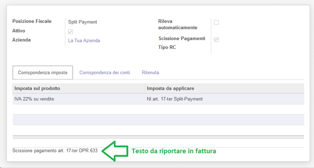

Split Payment


Italiano
Legge: https://goo.gl/7Atg3u (Art. 17-ter.)
Modulo per generare registrazioni contabili scissione dei pagamenti
English
Law: https://goo.gl/7Atg3u (Art. 17-ter.)
Module to generate Split Payment accounting entries

Nessuna informazione disponibile


Italiano
Per configurare questo modulo è necessario:
English
To configure this module, you need to:
------------------------------------------------------------------------------- Italiano * aggiungere una nuova imposta (Contabilità → Configurazione → Contabilità → Imposte). IVA al 22% SPL deve essere configurata nel modo seguente: English * add a new tax (Accounting → Configuration → Accounting → Taxes). IVA al 22% SPL should be configured like the following: ------------------------------------------------------------------------------- Italiano * configurare la posizione fiscale (Contabilità → Configurazione → Contabilità → Posizioni fiscali) usata per la scissione dei pagamenti, selezionando la casella "Scissione pagamenti". Nella posizione fiscale mappare l'IVA standard con l'IVA SP, come indicato di seguito: English * configure the fiscal position (Accounting → Configuration → Accounting → Fiscal Positions) used for split payment, setting 'Split Payment' flag. In fiscal position, map standard VAT with SP VAT, like the following:



Italiano
Per usare questo modulo, è necessario selezionare la posizione fiscale corretta nelle fatture
English
To use this module, you need to select the correct fiscal position in invoices

Authors | Autori:
Contributors | Partecipanti:
This module is maintained by the SHS_AV s.r.l..
This module is part of l10n-italy project.
Published information on | Informazioni pubblicate: 2024-03-26